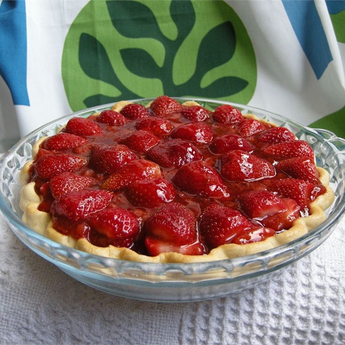

Strawberry Pie II

Strawberry Pie II
This is my favorite pie. It is very easy to make. I got the recipe many years ago in North Jersey. It is from the Sussex County Strawberry Farms.
- 1 (9 inch) pie crust, baked
- 1 quart fresh strawberries
- 1 cup white sugar
- 3 tablespoons cornstarch
- ¾ cup water
- ½ cup heavy whipping cream